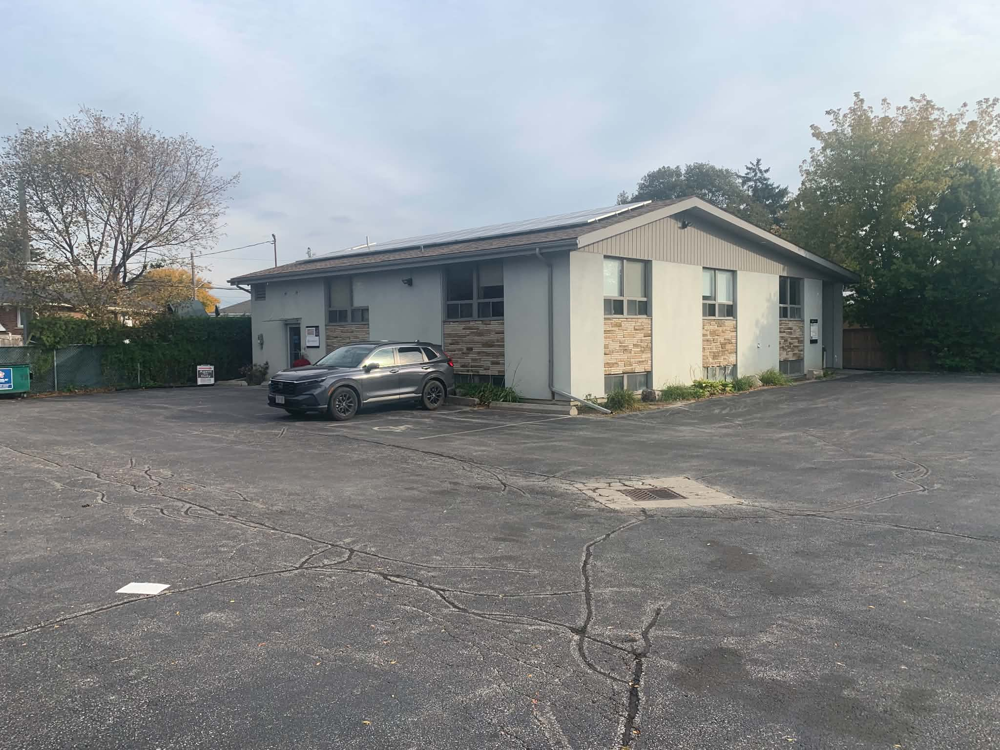

Visit Atlas Osteopathic Care in Etobicoke
Where Is Atlas Osteopathic Care?

Atlas Osteopathic Care is located at 160 The Westway, Room 14, Basement Floor, Etobicoke, Ontario, M9P 2C1.
Atlas Osteopathic Care160 The Westway, Room 14, Basement Floor
Etobicoke, Ontario, M9P 2C1
Phone: 647-927-7080
Email: omt@aocare.ca
Parking and Getting Here by Car
Free parking is available in the clinic parking lot, making the location easy to reach by car.
Getting Here by TTC
The clinic is accessible by TTC and is located near several major Etobicoke intersections.
- 37 Islington: Buses travelling north from Islington Station stop at Islington and The Westway.
- Coming from north of the clinic: Take a bus that travels south on Islington to the Islington and The Westway stop. The stop will be on the opposite side of the street.
- Royal York: Get off at Royal York and The Westway and walk west toward the clinic. It is a 17-minute walk.
- 52 Lawrence Avenue West: This bus stops at the corner of Islington and The Westway.
How to Find the Entrance
You can enter through either of the doors of 160 The Westway. Head downstairs, then follow the directions below. The room number is 14.
- Islington side entrance: head down the stairs and the office will be on your left.
- Westway side entrance: head down the stairs and the office will be on your right.
- Down the stairs; second door on the right. Room 14.


Book Your Appointment today!
Once you know where the clinic is, booking should be one click away. Book your treatment online through Jane, or start with a free 20-minute consultation to ask your questions first.